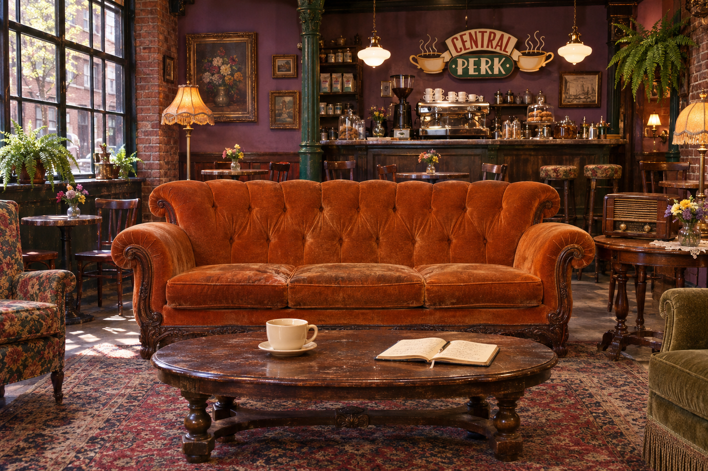

Leave the rush at the door. The coffee’s warm, the couch is yours,and there’s only one thing to do: a little something for you.

THE ONE WITH THE COFFEE BREAK
Could you TAKE any more breaks?
Tap the mug for another. Original fan-inspired jokes, not dialogue from the show.
A LITTLE FOCUS
Give this moment to one thing.
25 min study · 5 min break. Switch sessions whenever you're ready.
Keep this tab open. If your device sleeps, the time catches up when you return.
YOUR LITTLE LIST
No rush. Start with one small thing.
Your notebook is waiting.Big dreams start with small to-dos.
Saved in this browser on this site. No account needed.
THE ONE WITH A WELL-EARNED BREAK
12 hand-picked episodes. Pick your mood or browse the shelf.
Suggestions only — episodes aren't streamed here. Mood & character matches are our editorial picks.
SETTLE INTO THE SOUND
A little atmosphere from your favorite kind of coffee house.
Sound only starts when you press play.
These are original synthesized sounds inspired by the setting, not recordings or music from Friends.
Choose an audio file you have permission to use. It stays on this device and isn't uploaded. Choosing it pauses the synthesized ambience.